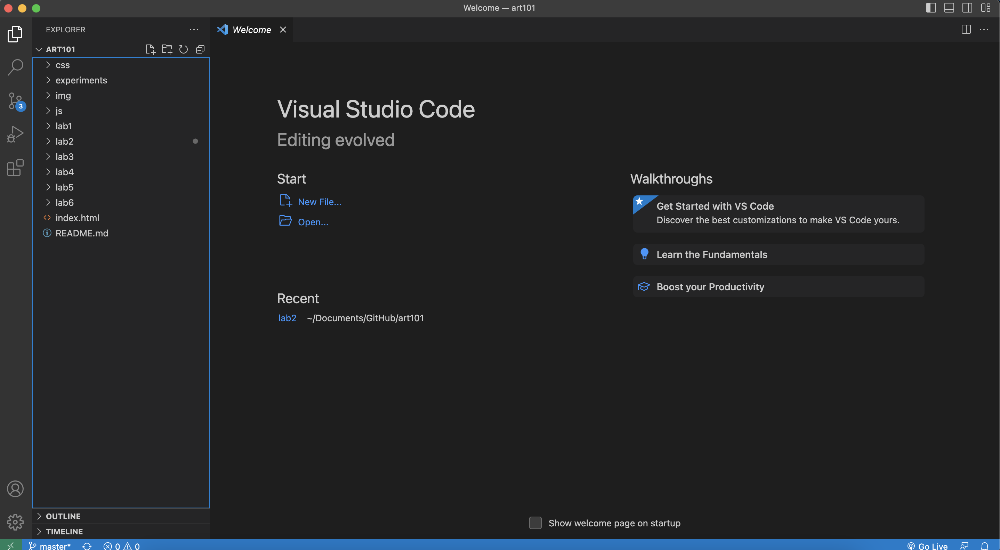

Lab 3 - File Structure
The purpose of this lab was to get comfortable with linking and managin different files within my local file structure.
Challenges
The main challenges I had were understanding the way my two css files worked and overwrote each other.
I didn't realize you could have multiple over-arching css files, but it is quite useful.
Problems
The problems I encountered were that I was incorrectly trying to link my "index.html" files on my homepage
by calling them directly by name instead of through their directories. I realized soon after that all index files are
named the same so I had to be more specific.
Reflection
I think this lab helped me understand my own computers organizational system which is a valuable skill to have.
I really enjoyed trying to make my homepage look as aesthetically pleasing as I could within my abilites but I
realized how hard it is to make everything fit nicely.
Results
Here is a screenshot of my file structure:
Here is a screenshot of my finished homepage code:

And here is a screenshot of my finished homepage: